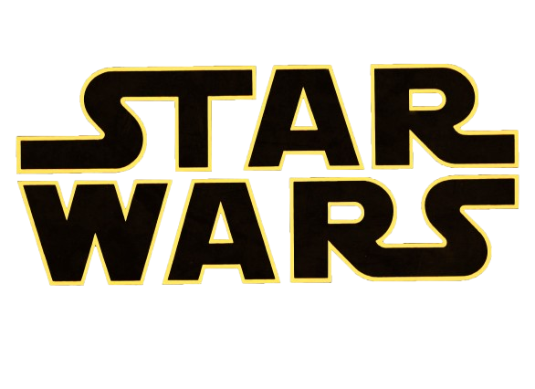

Star Wars: Uma trilogia revolucionária - Por Vítor Costa

Um breve conceito:
Star wars é uma história de fantasia que engloba elementos batidos na literatura e no cinema, como romance, drama, humor e luta entre bem e mal. O centro da trama é uma disputa política entre um império tirano e ditatorial e um grupo libertário. A franquia detém diversos personagens icônicos, como Luke Skywalker (Interpretado por Mark Hamill), Princesa Leia (Interpretado por Carrie Fisher), Han Solo (Interpretado por Harisson Ford), Darth Vader (Interpretado por diversos atores) e muitos outros. É legal destacar que a franquia perdura desde seu primeiro filme em 1977, e publica sob o comando da Disney diversas séries, desenhos animados, HQs, e produtos até hoje.